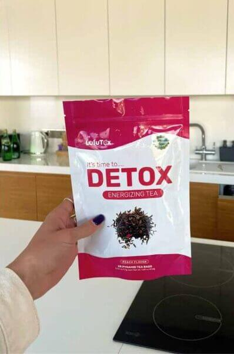
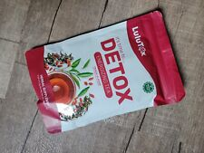
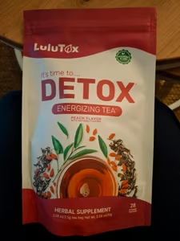
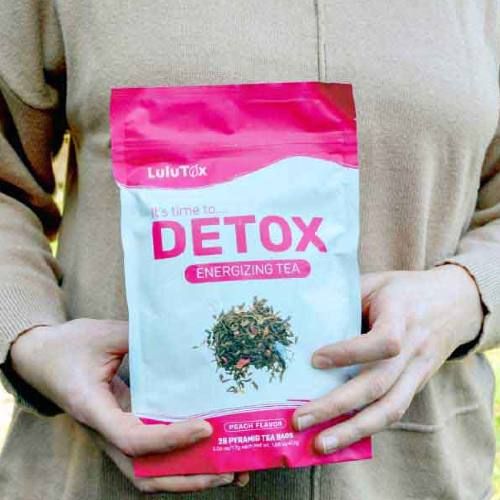
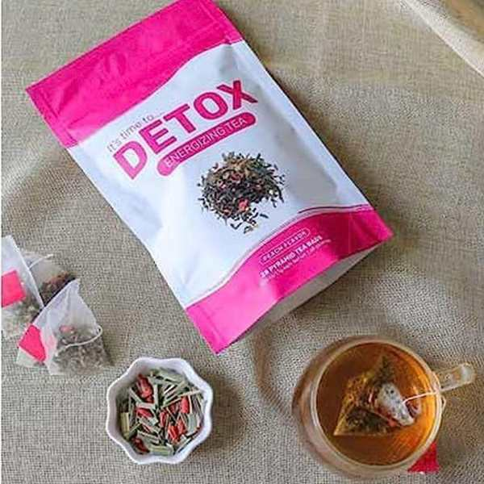
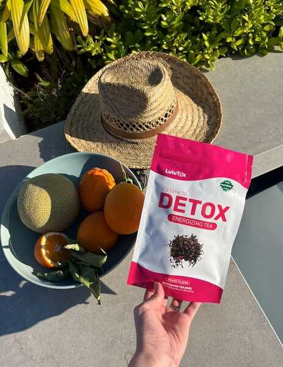

Ich litt drei Jahre lang an chronischer Verstopfung und landete deswegen fast auf dem OP-Tisch!
Meine Geschichte: Wie ich die Verstopfung in 4 Wochen loswurde!
Hallo! Mein Name ist Eleonore. Ich bin 58 Jahre alt und lebe in Berlin. Heute möchte ich meine Geschichte teilen, wie ich massive Verdauungsprobleme hatte und wie ich es schaffte, die Verstopfung für immer loszuwerden!
Im Alter von 55 Jahren hatte ich zum ersten Mal eine Magen-Darm-Erkrankung, und dann wurde bei mir Gastritis diagnostiziert. Der Grund dafür war eine ungesunde Ernährung! Ich arbeitete als Kassiererin in einem örtlichen Supermarkt. Bei der Arbeit waren wir ständig beschäftigt, also ersetzten wir ein normales Mittagessen oft durch Kaffee und Kekse. Damals schien mir das zu reichen, aber mit den Jahren nahm mein Appetit ab. Nach der Untersuchung sagte der Spezialist, dass sich Gastritis in 70% der Fälle bei Menschen in meinem Alter mit dieser Ernährung entwickelt.
Ich begann mit der Behandlung, und nach einem Monat bemerkte ich, dass ich nur noch 2-3 Mal pro Woche zur Toilette ging. Zuerst schenkte ich dem keine Beachtung, aber es wurde jede Woche schlimmer. Irgendwann konnte ich einfach nicht mehr ohne Schmerzen zur Toilette gehen.
Ich ging zum gleichen Spezialisten. Er sagte, dass ich Verstopfung hätte, was durch Verdauungsstörungen und eine Nebenwirkung der Medikamente verursacht sein könnte, die ich gegen Gastritis einnahm. Er verschrieb Abführmittel und schickte mich nach Hause. Ich machte die Kur, aber nichts änderte sich. Nach der Einnahme der Medikamente wurde es nur für ein paar Tage leichter, und dann kam alles zurück.
Nach einem Monat Anwendung wurde mir klar, dass diese Abführmittel mir nicht helfen würden, und ich beschloss, erneut zum Spezialisten zu gehen. Er zuckte nur mit den Schultern und sagte: „In Ihrem Alter ist das normal. Es ist schwierig, Verstopfung vollständig loszuwerden. Ich habe bereits die besten Mittel verschrieben, die ich kenne.“
Seine Gleichgültigkeit machte mich wahnsinnig! Warum nennen Sie sich Experte, wenn Sie nicht helfen können? Ich hatte bereits über 1.500 € für die empfohlenen Mittel ausgegeben, und das Ergebnis war gleich null. Ich kehrte nach Hause zurück und hoffte, dass sich mein Körper vielleicht anpassen würde und die Verstopfung von selbst verschwinden würde.
Sechs Monate vergingen. Ich begann unter ständigen Bauchschmerzen, Übelkeit und Schwindel zu leiden. Jeder Gang zur Toilette war eine Qual. Es fühlte sich an, als würde ich versuchen, Steine auszuscheiden. Entschuldigung für die Details, aber man kann es nicht anders sagen.
Ich begann im Internet nach Informationen zu suchen und erfuhr, dass der Körper bei Verstopfung bis zu 8 Kilogramm giftige Schlacken ansammeln kann, die den Körper von innen vergiften und den Darm auf gefährliche Größen dehnen.
Mit jeder Woche wurden die Schmerzen stärker. Ich hielt es nicht mehr aus. Die Informationen im Internet machten mir Angst, und ich beschloss, in eine teure Privatklinik zu gehen, in der Hoffnung, dass sie die wahre Ursache meines Problems finden würden.
Ich wurde in der Klinik wunderbar empfangen: freundliches Personal, aufmerksame Haltung. Es war völlig anders als in meiner örtlichen Praxis. Ich wurde von einem erfahrenen Spezialisten mit 12 Jahren Erfahrung empfangen. Er befragte mich ausführlich zu meinen Symptomen, hörte aufmerksam zu, untersuchte mich und schickte mich zur weiteren Untersuchung.
Die Ergebnisse kamen sehr schnell, und sie schockierten mich. Der Experte sagte, die Situation sei ernst:
„Ihr Darm ist zu überlastet; über 6 Kilogramm Abfallstoffe haben sich darin angesammelt. Die Tests zeigten einen hohen Toxingehalt im Blut, und aufgrund des ständigen Stresses haben sich Narben an den Darmwänden gebildet. Wenn Sie nicht mit der Reinigung beginnen, kann dies zu gefährlichen Komplikationen führen. Ich empfehle Ihnen, sofort mit der natürlichen Wiederherstellung zu beginnen; sonst schafft es der Körper nicht alleine. Verstehen Sie, dass Ihre Dickdarmkontraktionen nur alle paar Tage stattfinden; Ihr Körper kann diesen Kot physisch nicht ausscheiden!“
Ich stimmte der Operation zu, obwohl sie sehr teuer für mich war.
Die Operation wurde für einen Monat später angesetzt, also kehrte ich nach der Konsultation mit dem Experten nach Hause zurück.
Dann erinnerte ich mich, dass der Mann meiner Kollegin Madeleine vor sechs Monaten ein ähnliches Problem hatte. Ich beschloss, sie anzurufen, um herauszufinden, wie alles gelaufen war und was ihm geholfen hatte. Madeleine sagte, sie würde morgen zur Arbeit kommen und mir mehr erzählen.
Am nächsten Tag ging ich zu Madeleine und begann ein Gespräch. Ich war fassungslos, weil die Frau aufgeregt wurde.
— Was ist passiert?
— Mein Mann… hatte vor einem Monat Komplikationen nach Problemen mit dem Magen-Darm-Trakt.
— Wie das? Er ist doch erst 55!
— Er hatte schwere Verstopfung und musste operiert werden. Aber danach gab es einen Rückfall, und sein Körper konnte sich nicht normalisieren. Die Operation war erfolgreich, aber ein paar Wochen später wurde bei ihm eine Darmanomalie diagnostiziert. Jetzt muss er mit einem speziellen Beutel herumlaufen, um den Kot aufzufangen, weil er sich nicht normal entleeren kann.
Ich stand unter Schock. Mein Spezialist hatte mich auch gewarnt, dass ich Gefahr liefe, eine Anomalie zu entwickeln, und jetzt geriet ich noch mehr in Panik. Ich fragte Madeleine nach allen Einzelheiten, wie ihr Mann behandelt wurde, was seine Symptome waren. Und es stellte sich heraus, dass ihm die gleichen Medikamente verschrieben wurden, die ich einnahm. Aber sie halfen nicht!
Ich begann Panik zu bekommen!
Ich ging kaum noch zur Arbeit; meine Hände zitterten, und ich wurde von angstvollen Gedanken verfolgt. Ich hatte keine Kraft mehr zu arbeiten. Es schien, als wäre das Leben vorbei. Ich fühlte ständigen Schmerz, Angst und Ohnmacht. Ich beschloss, nicht aufzugeben und begann, nach einem natürlichen Weg zu suchen, um die Verstopfung loszuwerden und eine Operation zu vermeiden.
Ich begann im Internet nach einer Lösung zu suchen.
So stieß ich auf ein Forum, in dem eine Frau ihre Geschichte teilte: Sie heilte chronische Verstopfung ohne Operation, Spritzen oder Pillen. Nur ein Tee half ihr. Ihrer Meinung nach wirkt er stark, ist aber völlig natürlich. Der Preis war angemessen, und die Zusammensetzung ist rein pflanzlich. Nach all den Ausgaben für Medikamente dachte ich: "Ein paar Euro mehr sind kein so großer Betrag, wenn es wirklich hilft."
Ich kontaktierte die Frau, um herauszufinden, wo sie ihn bestellt hatte. Es stellte sich heraus, dass dieser Tee nur auf der offiziellen Website des Herstellers verkauft wird. Und selbst dort ist er nicht immer verfügbar. Aber ich hatte Glück, ich schaffte es, eine Bestellung aufzugeben, gerade als er verfügbar war. Ich erhielt den Tee 4 Tage später per Post.

Zuerst glaubte ich nicht wirklich daran, dass es funktionieren würde, weil ich schon Dutzende verschiedener Mittel ohne Erfolg ausprobiert hatte.
Aber nach zwei Tagen der Einnahme erkannte ich, dass dieses Mal alles anders war. Das ist das effektivste Produkt, das ich je probiert habe! Ich trank es jeden Morgen nach dem Essen. Schon nach dem ersten Tag spürte ich Erleichterung: Die Krämpfe und die Schwere im Magen verschwanden. Und am Abend des zweiten Tages konnte ich ohne Probleme zur Toilette gehen.
Der Tee wirkt sanft, ohne scharfe Krämpfe und ohne den unangenehmen Effekt, der oft nach Abführmitteln auftritt. Nach 4 Tagen waren alle toxischen Rückstände, die sich über Monate angesammelt hatten, vollständig aus dem Körper ausgeschieden. Ich trank ihn noch zwei Wochen lang weiter zur vollständigen Genesung, denn die Darmreinigung ist nur der erste Schritt, um das Problem vollständig loszuwerden.
Seine Hauptwirkung besteht darin, die Arbeit des gesamten Verdauungstraktes zu normalisieren und die natürliche Kontraktion des Rektums wiederherzustellen. Jetzt verstehe ich, warum diese Abführmittel, die mir der Spezialist riet, nur für ein paar Tage halfen: Sie entfernen einfach den Abfall, beseitigen aber nicht die Ursache. Und dieses Produkt funktioniert anders; es beseitigt die Wurzel des Problems. Das Produkt heißt Lulutox Detox Tea.
Bei einem Besuch beim Spezialisten bestätigte er das Ergebnis: Die Verstopfung war wirklich vollständig verschwunden! Und das ohne Schaden für die Mikroflora. Also scheint alles gut gegangen zu sein, ohne Nebenwirkungen. Die Operation wurde sofort abgesagt. Ich habe keine Worte, um zu beschreiben, wie glücklich ich damals war! Ich fühlte eine unglaubliche Erleichterung! Wer chronische Verstopfung losgeworden ist, wird mich definitiv verstehen.
Es sind drei Monate seit dieser ganzen Geschichte vergangen, und ich fühle mich immer noch großartig! Ich gehe normal zur Toilette und spüre keine Schmerzen oder Unbehagen mehr. Ich konnte sogar wieder zur Arbeit gehen! Oh, ich wünschte, ich hätte Lulutox Detox Tea sofort gefunden.
Aber wenn Sie das gleiche Problem mit Verdauung und Verstopfung haben, lösen Sie es schneller! Ich bin sehr froh, dass ich es geschafft habe, eine Operation und Rückfälle zu vermeiden und die Verstopfung relativ schnell loszuwerden! Ich wünsche Ihnen dasselbe!
Unseren Journalisten gelang es, einen Kommentar von einem Spezialisten zu erhalten, der persönlich an der Entwicklung von Lulutox Detox Tea beteiligt war. Hier ist, was er uns erzählte:

— Logan, warum leiden Ihrer Meinung nach heute so viele Menschen an Verdauungsproblemen und Verstopfung, trotz moderner Behandlungsmethoden?
— Dies liegt vor allem an:
- dem Lebensstil des modernen Menschen (Stress, unregelmäßiges Essen, Bewegungsmangel);
- Umweltverschmutzung;
- einer Zunahme von minderwertigen und gentechnisch veränderten Lebensmitteln in der Ernährung;
- einem veralteten Behandlungssystem.
Die Verbreitung von Magen-Darm-Erkrankungen in unserem Land ist erschreckend. In verschiedenen Bundesstaaten reicht sie von 70 bis 90 % der Bevölkerung. Das ist viel mehr als in Israel, Japan und Europa.
— Warum ist die Situation mit der wirksamen Behandlung von Magen-Darm-Erkrankungen in unserem Land Ihrer Meinung nach so schwierig?
— Leider bleibt das Problem wirksamer Lösungen für Magen-Darm-Erkrankungen in unserem Land sehr akut. Viele Pharmaunternehmen haben es nicht eilig, Mittel bekannt zu machen, die wirklich funktionieren, da dies ihre Gewinne erheblich schmälern könnte. Heute ist jedoch ein Produkt auf dem Markt erschienen, das das Problem wirklich lösen könnte und es Patienten ermöglicht, die normale Funktion des Verdauungssystems wiederherzustellen.
Letztes Jahr wurde ein neues Produkt, Lulutox Detox Tea, entwickelt, das ein optimales Gleichgewicht des Darmmikrobioms und des gesamten Verdauungssystems schafft.

Die neue Formel neutralisiert die Auswirkungen schädlicher Faktoren auf den Darm und stellt das normale Magen-Darm-Mikrobiom in 30 Tagen zu 100% wieder her, wodurch alle Symptome beseitigt werden.
Dies ist ein Pflanzenkomplex, der bei Einnahme die Synthese von 4 Milliarden koloniebildenden Einheiten (KBE/g) auslöst, was es Ihnen ermöglicht, das Gleichgewicht des Darmmikrobioms aufrechtzuerhalten und eine einzigartige Wirkung auf den Körper zu haben.
— Welche Pflanzen sind in Lulutox Detox Tea enthalten?
— Es ist ein kraftvoller Kräuterkomplex, der moderne medizinische Technologien mit der natürlichen Kraft von Extrakten einer Vielzahl von Pflanzen verbindet: Sencha-Grüntee, Brennnesselblätter, Löwenzahnblätter, Zitronengras, Goji-Beeren, Ginseng, Mariendistelblätter, Steviablätter, Yerba Mate, Matcha-Grüntee usw. Diese wiederum:
- Erhöhen die Sekretion der Magen-Darm-Drüsen, tonisieren die Darmmuskulatur und beseitigen Schmerzen und Entzündungen.
- Verbessern die Peristaltik, stellen die normale Darmfunktion wieder her.
- Haben antimikrobielle und antiseptische Wirkungen, entfernen Giftstoffe und Schlacken aus dem Körper.
- Haben regenerative Eigenschaften, sorgen für lokale Immunität.
- Haben entzündungshemmende Eigenschaften, ein starkes Mittel gegen Parasiten.
— Wie unterscheidet sich Lulutox Detox Tea von allen anderen bestehenden Magen-Darm-Mitteln?
— Das Mittel unterscheidet sich von allen existierenden Analoga durch seine sanfte Reinigung des Darms, die Wiederherstellung des Magen-Darm-Trakts sowie die Stärkung und Aufrechterhaltung der zellulären Immunität auf hohem Niveau.
Dies ist ein natürliches pflanzliches Mittel, um Verstopfung und jegliche Magen-Darm-Störungen bei Erwachsenen loszuwerden. Seine Vorteile sind:
- milde Wirkung, ohne dass man während der Behandlung zu Hause bleiben muss,
- keine Gewöhnung,
- Wiederherstellung des Darms ohne Elektrolytverlust und Nebenwirkungen,
- angenehmes Gefühl während der Einnahme, Fehlen von Darmkrämpfen,
- Verbesserung der Darmperistaltik,
- sanfte Freisetzung von veraltetem Stuhl,
- stellt das natürliche Darmmikrobiom in 30 Tagen wieder her.
Lulutox Detox Tea hilft bei Reizdarmsyndrom, ist geeignet bei Verstopfung durch Medikamente und Gallenblasenprobleme, verbessert die Verdauung und normalisiert die Funktion des Magen-Darm-Trakts im Allgemeinen.
All dies in Kombination trägt zur Normalisierung der mikrobiologischen Prozesse im Magen-Darm-Trakt und zur Verbesserung der Lebensaktivität in vielen Indikatoren bei. Wie man sagt: Für ein aktives langes Leben morgen müssen Sie Ihr Mikrobiom heute pflegen.
— Wie wendet man Lulutox Detox Tea richtig an, um die besten Ergebnisse zu erzielen?
— Die Anwendungsmethode ist sehr einfach:
- Schütteln Sie die Packung und geben Sie einen Beutel Lulutox Detox Tea in eine Tasse mit heißem Wasser.
- Lassen Sie ihn 5-7 Minuten ziehen – trinken Sie ihn heiß oder lassen Sie ihn abkühlen und trinken Sie ihn als kalten Tee.
- Nehmen Sie ihn einmal täglich ein und Sie werden in nur wenigen Tagen spürbare Ergebnisse sehen!
— Ist Lulutox Detox Tea sicher?
— Da Lulutox Detox Tea eine völlig natürliche Zusammensetzung hat, ist er absolut sicher für die Gesundheit. Mehr noch, er ist sehr nützlich für den Körper!
"Ich habe lange unter schrecklichen Bauchschmerzen, Verstopfung und Blähungen gelitten. Ich wurde mehrmals vom Krankenwagen abgeholt. Und dann begannen sich Diabetes und Bluthochdruck zu entwickeln... Ich habe Glück, dass ich Lulutox Detox Tea rechtzeitig gefunden habe. Er hat mir nicht nur geholfen, die Darmprobleme loszuwerden, die mich einfach quälten, sondern auch meinen Körper komplett wiederhergestellt. Und ich kehrte zu einem vollen Leben und meiner Lieblingsarbeit zurück."
Francis T.
"Ich habe seit meiner Jugend einen schwachen Darm. Und ich habe auch Gallensteine, hohen Zucker und hohen Cholesterinspiegel. Und ich werde oft krank. Man sagt, es liegt auch am Darm! Es gab keine Möglichkeit, alles auf einmal zu bewältigen: Ich nehme Pillen für eine Sache, und die andere wird schlimmer... Ich litt jahrelang, bis mir geraten wurde, Lulutox Detox Tea zu verwenden. Eine Kur mit dem Mittel - und ich bin ein gesunder Mensch!"
Amy G.
Meine Kollegen, die Gastroenterologie und das Mikrobiom studieren, haben einen speziellen Schnelltest für die Online-Diagnose entwickelt.
Jeder kann den Test kostenlos machen - es dauert nur 2 Minuten, aber die Ergebnisse helfen festzustellen, ob Sie Gefahr laufen, Magen-Darm-Erkrankungen zu entwickeln.
Finden Sie heraus, ob Sie Probleme mit der Funktion des Magen-Darm-Trakts haben!
— Wir wissen, dass Lulutox Detox Tea nicht in Apotheken erhältlich ist. Und Ärzte verschreiben ihn nicht. Warum?
— Es stehen Milliarden von Gewinnen und ein gut etabliertes Geldkreislaufschema im medizinischen Bereich auf dem Spiel. Ich sage das, weil eine solche Haltung gegenüber dem eigenen Volk ein Verbrechen ist, keine Medizin. Denken Sie nur darüber nach, jeden Tag verschreiben Millionen von Spezialisten etwa ein Dutzend "richtige" Medikamente an Hunderte von Millionen Menschen.
Normalerweise kauft eine Person mit Magen-Darm-Problemen mehrere Packungen von jedem von ihnen in 1-2 Jahren, weil der Spezialist sie nach seinem System verschreibt. Oder noch schlimmer, "weil es oft in der Werbung gezeigt wird". Als Ergebnis wird niemand gesund, und alle kaufen Medikamente in Scharen und bereichern Pharmaunternehmen.
Ich sage Ihnen das. Normale Leute wissen nichts über Lulutox Detox Tea. Und selbst Spezialisten aus kleinen Städten und Dörfern sind nicht immer auf dem Laufenden über solche Neuheiten und Entwicklungen. Und das ist sehr traurig.
— Sie sagten, dass Lulutox Detox Tea nicht in Apotheken verkauft wird. Aber wo kann man ihn kaufen?
— Alle Bürger können Lulutox Detox Tea online direkt beim Hersteller im Rahmen eines speziellen Rabattprogramms bestellen.
— Warum ist dieses Produkt nur online erhältlich?
— Das geschah aus drei Gründen:
- Qualitätskontrolle. Lulutox Detox Tea wird direkt ab Werk an den Kunden geliefert.
- Schutz vor Zwischenhändlern. Wenn das Produkt 10, 20 oder sogar 30 Mal teurer verkauft wird.
- Schnelle gezielte Lieferung.
Wie ich bereits sagte, wird das Programm des Sozialhilfefonds bereits umgesetzt. Dieses Programm ermöglicht es Ihnen, den Lulutox Detox Tea mit einem Rabatt von 70% zu bestellen.
Daher empfehle ich als Experte dringend: Verlieren Sie keine Zeit! Es gibt vielleicht keine zweite Chance. Wie lange das Programm dauern wird und wie lange der Lulutox Detox Tea vorrätig sein wird, ist unbekannt.
SPEZIELL FÜR UNSERE LESER VERÖFFENTLICHEN WIR EINEN OFFIZIELLEN VERKAUF DES HERSTELLERS
ANDERE RABATTE WERDEN JEDEM GEWÄHRT
BIS ZUM EINSCHLIESSLICH!
WÄHLEN SIE EINE TÜR FÜR EINEN SONDER-RABATT


Ich habe den Lulutox Detox Tea einen Monat lang genommen. Das Ergebnis hat mich überrascht. Ich fing an, mich besser zu fühlen; keine Verstopfung mehr, ich hatte Kraft, und der Druck war 120 zu 85. Es schmerzte und zog in meiner Seite, besonders nach dem Sport, aber alles ging weg.

Ein gutes Mittel! Es hat mir gefallen. Ich nahm es wegen Verstopfung und zur Stärkung des Körpers, aber ich teilte es auch mit meiner Frau, die hohen Blutzucker hat. Meine Verstopfung verschwand nach einer Woche. Der Zucker meiner Frau ist gesunken, und auch mein Blutdruck ist seit einigen Tagen normal. Ich empfehle den Lulutox Detox Tea jedem.

Vielen Dank! Ich habe es geschafft, eine Kur für mich im Rahmen des Werbeprogramms zu bestellen. Ich werde es ausprobieren. Das Problem mit dem Darm ist…

Mein Mann hat große Probleme mit seinem Darm. Kolitis, Blähungen und schreckliche Verstopfung. Sie boten einen Krankenhausaufenthalt an, aber was wird das bringen? Außer dass sie ihn eine Weile an den Tropf hängen, und das war's. Aber die Schwester meines Mannes hat irgendwo Lulutox Detox Tea besorgt, und mein Mann nahm ihn in zwei Kuren. Also, was denken Sie? Jetzt geht er regelmäßig zur Toilette! Und sein Cholesterin ist auch gesunken, und damit sein Blutdruck. Also dieses Mittel wirkt, wie sonst!


Ich ging das Risiko ein, Lulutox Detox Tea zu bestellen und bereue es immer noch nicht. Ich gehe einmal pro Woche zur Toilette, und meine Immunität ist schwach; ich habe Probleme mit den Blutgefäßen, und mein Blutdruck ist hoch. Nach Lulutox Detox Tea gab es keine Nebenwirkungen, und ich war mit dem Ergebnis zufrieden. Es ist ein natürliches Mittel, es schadet zumindest nicht. Ich fing an, jeden Tag zur Toilette zu gehen, entschuldigung für die Details.

Hurra!!! Ich habe es geschafft, Lulutox Detox Tea mit Rabatt zu bestellen! Und wenn es so einen Hype darum gibt, bedeutet das, dass es ein wirklich wirksames Mittel ist.

Danke für die Information! Ich möchte es ausprobieren; der Darm ist sehr wichtig.

Eine Freundin empfahl mir Lulutox Detox Tea gegen Verstopfung und Blähungen. Ich kaufte ihn mit einem guten Rabatt während einer Aktion. Ich habe schon angefangen, ihn zu trinken, und heute bemerkte ich, dass mein Kopf klar ist, nicht wehtut und nicht schwer ist wie sonst. Mein Blutdruck ist normal. Ich fühle, dass die innere Schwellung zurückgeht, und ich fühle mich leichter. Ein gutes natürliches Mittel, ich werde es weiterhin trinken.


Ich beschloss, es zu versuchen. Ich habe Verstopfung. Meine Frau trinkt auch Lulutox Detox Tea. Ihr Blutdruck sprang; jetzt ist alles normal, die Schwellung ist weg, und sie hat viel Gewicht verloren.

Danke für die Aktion! Ich habe es zu einem tollen Preis bestellt.

Meine Mutter wurde dank Lulutox Detox Tea gerettet! Alles, wie die Frau hier schrieb: Die Krankheit entwickelte sich, ihr Magen tat weh, und die Spezialisten zuckten nur mit den Schultern. Und gleichzeitig isst meine Mutter im Allgemeinen alles gedämpft, gekocht. Aber Alter, Ökologie, Stress... und das war's, Entzündung im Darm. Die Krankheit entwickelte sich schnell, und letzten Winter hörte meine Mutter buchstäblich auf, nach draußen zu gehen, wegen Bauchschmerzen und Blähungen! Lulutox Detox Tea half sehr. Jetzt, wo es einen Rabatt gibt, werde ich 2 weitere Kuren bestellen, damit sie besser zur Hand sind. Besonders jetzt, wo man es im Angebot bekommen kann!

In letzter Zeit war ich ein Wrack, mit Magenproblemen, mal Verstopfung, mal Durchfall. Gesamtcholesterin war 6,8, was sehr hoch für mich ist. Ständiger Schwindel, Blutdrucksprünge und schlechte Gesundheit. Und nach 2 Monaten Einnahme von Lulutox Detox Tea lag der Wert bei 3,4. Aber das Wichtigste ist meine Gesundheit! Jetzt kann man die Analyse weglassen. Ich habe den Unterschied verstanden, dass wenn man viel Kraft hat, man nicht müde wird, der Kopf klar arbeitet und nichts wehtut! Heute habe ich auch den Lulutox Detox Tea laut Programm für meine Mutter bestellt. Sie ist 78 Jahre alt. Ich hoffe, er schützt sie vor dem Virus. Blutdruck, Zucker und Gelenke quälten sie auch.

Ich trinke Lulutox Detox Tea seit einem Monat. Ich begann mich merklich besser zu fühlen, und ich fühle, dass es jeden Tag besser wird. Mein Magen stört mich nicht mehr, und ich gehe normal zur Toilette. Ich hatte nicht erwartet, noch mit meinen Enkelkindern zu spielen, aber nein, ich werde länger leben!

Ich bin 58 Jahre alt und krank. Ich habe früher hart gearbeitet und mich nicht geschont. In letzter Zeit hatte ich Probleme mit meinem Stuhl. Ich nahm viele verschiedene Medikamente, aber sie halfen nicht. Dann rieten sie mir Lulutox Detox Tea für den Magen, aber damals konnte ich ihn nicht finden. Und jetzt habe ich ihn in der Aktion bekommen! Ich bestellte ihn ohne nachzudenken! Ich fing an zu trinken, und meine Gesundheit verbesserte sich! Ich gehe jetzt normal zur Toilette. Ich habe mehr Energie, Kraft und schlafe besser. Mein Blutdruck hörte auch auf zu steigen. Dank Lulutox Detox Tea kehrte ich ins normale Leben zurück. Hier ist die Geschichte. Deshalb rate ich aus eigener Erfahrung. Es hat mir sehr geholfen. Ich wollte leben!

Ich stimme jedem Wort zu - Lulutox Detox Tea ist ein sehr wirksames Mittel. Ich hörte davon im Programm "Gesundheit". Ich bin sehr froh, dass man ihn mit Rabatt bestellen kann, was ich auch getan habe. Und auch wenn diese Stars ins Ausland reisen, werden die besten Gesundheitsprodukte immer noch in unserem Land hergestellt.

Danke für den Artikel! Ich fand ihn sehr zeitgemäß. Es ist ein Geschenk des Himmels für unsere Familie. Wir haben alle Magen-Darm-Probleme. Und es gibt genug andere Beschwerden. Ich habe große Angst vor Covid, ich habe meinen Schwiegervater und meine Schwiegermutter in dem Jahr verloren, dieser Virus nahm viele meiner Freunde mit 20. Und meine Immunität ist schwach, ich habe viele Papillome, und ich werde oft krank. Mein Mann hat Diabetes, mein Sohn hat Ekzeme, und meine Mutter hat hohen Blutdruck. Ich habe eine Kur für die ganze Familie bestellt, und wir werden sie nehmen!

Lulutox Detox Tea ist ein ausgezeichnetes Mittel! Ich wusste schon lange von den heilenden Eigenschaften der Pflanzen, aus denen der Sirup besteht. Meine Großmutter machte auch eine Tinktur daraus und gab uns immer einen Teelöffel zum Abendessen. Ich liebe natürlich und ohne Chemie. Und ich mag es nicht, zu den Ärzten zu gehen, diese Warteschlangen, Ärzte sind so wütend wie Hunde. Und der Arzt hat recht, die Hälfte aller unserer Krankheiten, sogar die schrecklichsten, werden dadurch verursacht, dass der Magen-Darm-Trakt nicht mit voller Kapazität arbeitet. Wiederherstellen, reinigen - und Sie werden überrascht sein, wie viel auf einmal verschwindet! Keine Viren, Druck und Schwellungen mehr. Ich hatte auch ein Frauenproblem, und davon ist auch keine Spur mehr übrig. Ich fühle mich großartig! Das ist wahrlich ein Heilmittel für alle Krankheiten.

Ich las über den Lulutox Detox Tea und beschloss, ihn auszuprobieren. In unserer Situation muss man alles versuchen. Bis Komplikationen beginnen. Es ist beängstigend, ich habe das gesehen... Das wünscht man seinem Feind nicht.

Vielen Dank für diesen Artikel! Ich hoffe, er wird auch Menschen helfen, so wie er mir geholfen hat!

Meine Schwiegermutter empfahl mir diesen Lulutox Detox Tea, und ich schaffte es, ihn am letzten Tag des Verkaufs zu bestellen. In 2 Monaten wurde ich ein anderer Mensch! Nicht nur verschwand mein Bauch, sondern meine Energie schoss in die Höhe, mein Blutdruck normalisierte sich, und ich verlor auch 8 kg, und viszerales Fett war übrigens weg. Ich fühle mich jetzt viel besser! Ein sehr gutes Mittel. Ich empfehle Lulutox Detox Tea definitiv jedem!

Das beste Mittel! 5 Sterne! Nehmen Sie es, Sie werden es nicht bereuen, wenn Sie lange leben wollen!

Ich bin begeistert! Ich habe so viele Mittel für meinen Magen ausprobiert, und dieser Sirup half mir in einer Woche! Ich muss noch mehr kaufen. Wer wusste, dass die Hälfte meiner Krankheiten auf einmal geheilt werden könnte! Danke an den Arzt, dass er es so ausführlich erklärt hat.

Die Ärzte schrieben meine Krankheiten dem Alter zu, und ich war beleidigt. Wie das? Ich fühle mich jung. Mein Leben ist meine Familie, mein Garten, meine Blumen, und wegen Problemen mit meinem Stuhl ist ein normaler Gang zum Laden gegenüber für mich selten geworden. Außerdem habe ich Probleme mit den Blutgefäßen, dem Herzen und dem Blutdruck. Und dann, zufällig, dank Ihres Artikels, erfuhr ich von Lulutox Detox Tea. Er erwies sich als preiswert; als Rentner schadet ein zusätzlicher Pfennig nicht. Jetzt fühle ich mich wie ein gesunder Mensch! Und was noch passieren wird! Ich trinke ihn erst seit drei Wochen und plane, ihn noch zwei Monate zu trinken!

Lulutox Detox Tea ist ein wunderbares Mittel! Es gab keine Nebenwirkungen; die Zusammensetzung ist natürlich. Ich machte eine Kur, bekam einen Rabatt auf die Aktion, und es stellte sich heraus, dass es selbst für mich, einen Rentner, ziemlich preiswert war.

Ich habe auch eine positive Erfahrung mit der Einnahme von Lulutox Detox Tea bei verschiedenen Krankheiten.

Ich trinke Lulutox Detox Tea seit einem Monat, und der Effekt ist da! Er hilft dem Magen-Darm-Trakt. Und das Gewicht ging runter, und die Schmerzen in der Seite hörten auf.
Ich habe von diesem Lulutox Detox Tea gehört, ihn aber noch nicht ausprobiert. Und ich sollte. Es ist beängstigend, sich bis zu einer Darmanomalie zu bringen, oder sogar zu anderen Komplikationen. Ein Freund von mir hatte eine Darmanomalie. Obwohl er viele verschiedene Medikamente nahm. Und alles begann mit Verstopfung. Also denkt nach. Ich habe den Lulutox Detox Tea bestellt, man muss seinem Darm helfen.